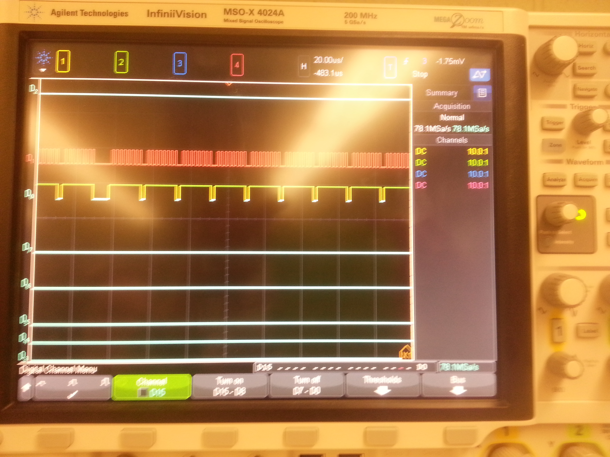
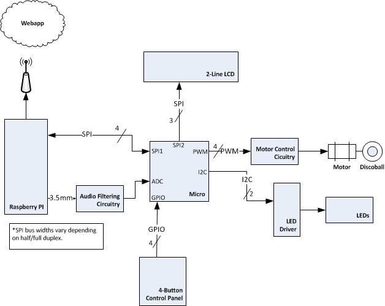

{kind=link}
The first testing of the tinysong API was initiated. The code was inserted into the Django tutorial app and tested from the Django shell. The results look like this:

January 14, 2014 (1 hour):
Initialized github repo with stubs for directories and blank
notebook templates.
January 15, 2014 (1 hour):
Began a Django web application tutorial, put it under version
control
(step 1)
January 15, 2014 (2 hours):
Met as a team after class to finish writing preliminary
project proposal.
January 16, 2014 (1 hour):
Continued working through Django tutorial
(step 2)
WEEK 01 SUMMARY
Accomplishments: Submitted preliminary project proposal.
Weekly Work Total: 5 hours
Project Work Total: 5 hours
January 19, 2014 (1 hour):
Got on team account, put all team webpage materials under
version control.
The repo was then reorganized and a bash script was authored to aid in staging/testing website changes in the
repo, then exporting them to the live hosting environment. More work will probably be involved when the same
task is undertaken for the webapp's resources. A thought: it might be the case that the limited hosting
feature
set provided by ECN will not be sufficient for the functionality required from the Every1 DJ webapp
January 22, 2014 (1.5 hours):
Finished Django tutorial
step 2
and committed to repo. Step 2 focused on the Django-generated admin pages for each specific application
runing on a site. So far, it will likely be sufficient to run a single app to power the project's needs.
At the end, the step 2 tutorial previewed the template with which the user can modify the way in which the
python-powered content is displayed in HTML/CSS. This feature is the focus of step 3.
January 22, 2014 (1.5 hours):
Completed Django tutorial
step 3
and committed to repo. Switched mid-tutorial to the latest Django tutorial version (1.6); that's also what
is installed on the development machines. Began some simple view authoring and intro to the Django template
language. Brainstorming was briefly undertaken as to a potential data model for the song selection/sorting
as well as storage. Atomic data element will probably be a song, with multiple attributes and views.
January 22, 2014 (1 hour):
Finished Django tutorial
step 4
and committed to repo. Step 4 included a form to calculate voting on polls, as well
as a switch from distinct and hardcoded to generic, flexible templates.
January 26, 2014 (1 hour):
Worked with Courney to finish the final proposal and do a rough schedule estimate. As the project progresses,
it will be important to ensure that derivation from the previous year's DJ project remains at a minimum.
WEEK 02 SUMMARY
Accomplishments: Submitted final project proposal.
Weekly Work Total: 6 hours
Project Work Total: 11 hours
January 26, 2014 (2 hours):
Finished up
step 5 and
step 6.
The "prototype" looks like this upon completion of step 6:
It's ugly, but it's powered by Django, and that's a start. It has become fairly evident that hard-coding
in a Grooveshark (or similar) API call and integrating with the Django database handling will be a big
milestone for this project. The voting/selection algorithm should be rather simple.
January 27, 2014 (1 hour): Began homework 2 (PCB exercise). Investigation into API candidates for music search and selection was begun. One candidate looks great: Tinysong. It's an appealing choice because it's simple (only 3 methods) and supports the functionality required for the device. A separate API would be necessary to get things like album art or other image materials (Tinysong appears to be text info only, hence the name).
January 28, 2014 (1.5 hours):
The first testing of the tinysong API was initiated. The code was inserted into the Django tutorial app
and tested from the Django shell. The results look like this:
January 29, 2014 (2.5 hours):
Attended lab with teammates. Refactoring of PSSC criteria was accomplished, and the PSSC's were
informallly accepted. A Raspberry Pi was ordered and should arrive by Friday. Homework 2 (PCB tutorial)
was completed, although singoff by the TA was not.
January 31, 2014 (1 hour):
Raspberry pi and accessories were delivered. Some time was spend assembling Rpi and collecting documentation.
The team will need an SD reader/writer in order to boot an OS on the Rpi.
WEEK 03 SUMMARY
Accomplishments: Homework 2 - PCB tutorial
Weekly Work Total:8 hours
Project Work Total: 19 hours
February 6, 2014 (1.5 hours):
Team meeting was held to complete homework 3. Part selection was accomplished (preliminary status),
and the majority of the assignment was completed.
February 7, 2014 (1 hour):
Completed homework 3 and submitted to 477 portal.
WEEK 04 SUMMARY
Accomplishments: Homework 3 - Design Constraint Analysis
Weekly Work Total: 2.5 hours
Project Work Total: 21.5 hours
February 12, 2014 (2 hours):
Team meeting was held in lab for mandatory lab #5. Component selection feedback was received, and some
progress was made in part selection, especially in the previously lacking power supply and regulation
components. It was determined that the power supply voltage should be higher than that which is required
of the RaspberryPi (5V), so a 6.5V power supply was selected. In addition, it was decided that voltage
regulators would be included for both the Raspberry Pi and digital circuitry supplies. Another discussion
centered around options for LED driving devices. A FET device and a constant current driver were the
two discussed options, and a working FET-controlled LED design was supplied by George.
Last, the workload for HW 4 was divided, with tha majority falling to Courtney, our resident packaging
and mechanical design specialist.
February 15, 2014 (1.5 hours):
Revision of homework 4 was completed prior to its submission by Courtney. After completion of the
revision, some initial integration effort was begun. Tool acquisition and some cabling were begun with the
intent to start programming the microcontroller with its MPLAB IDE and evaluation kit. The first microcontroller
task will focus on the 3-wire serial peripheral in order to communicate with the serial port on the Raspberry
Pi. A quick setback came in the form of a missing power supply for the evaluation kit. Joe promptly supplied one,
further integration efforts will continue in the near future.
WEEK 05 SUMMARY
Accomplishments: Homework 4 - Packaging Constraints
Micro eval board obtained and programmed
Weekly Work Total: 3.5 hours
Project Work Total: 25 hours
February 18, 2014 (1.5 hours):
A Django refresher from tutorials linked above was undertaken. A small modification of the existing webapp
was made: there is now a basic Search button on the main page:
which performs a hard-coded call to tinysong API. This is a
step closer to actually displaying search results in a meaningful manner.
February 19, 2014 (2.5 hours):
Labratory attendance, as usual, was mandatory, and the focus was on schematic progress and/or issues. The
discussion was led primarily by Courtney, who then assembled a list of outstanding concerns for later
resolution with course staff. The hardware narrative components were largely decided, and some division
of labor was devised. Clarification on some peripheral responsibilities for the design was an additional
conversation topic.
February 21, 2014 (2 hours):
A team meeting was held to aid Sophie in completion of the hardware narrative report. An individual contribution
of the block diagram and design decisions was made. Microcontroller port assignments were the largest set of
decisions to be made. Some physical/connection topics were discussed with respect to schematic completion. It
was tentativel decided that all necessary Raspberry Pi pins, control panel (pushbutton) pins, LCD pins, and motor
pins would probably go to connectors on the PCB, since all aforementioned components will reside at specific
location in the package (external to PCB, internal to packaging).
February 22, 2014 (4 hours):
A more thorough setup by Matt of the Raspberry Pi workstation was facilitated. Access to the github repository
was one initial accomplishment, as well as the acquiring of pre-built SPI python wrappers from
100randomtasks.com.
A preliminary visual inspection of the waveforms from the Raspberry Pi was promising, although a more scientific
inspection will take place once it is more apparent how to operate some features on the MSO-X 4024A mixed-signal
oscilloscope.
One unfortunate discovery came in the knowledge that the Raspberry Pi SPI harware does not support slave mode.
See page 8 of the Raspberry PI CPU
datasheet.
This factor will play a part in refactoring the communication design and could potentially require a slight
schematic modification. It is natural at this stage to develop SPI (slave) TX code on the PIC eval kit in order
to communicate with (probably) functional SPI TX/RX code on the Raspberry Pi.
SPI investigation on the micro side was begun, and the initial plan of attaching SPI1 as
master to SPI2 as a slave was undertaken.
Unfortunately, somewhere in the inclusion of the SPI.h lib file and building, an error occurred in the build
settings. At the moment, building and programming the micro is not functional. Instead, a good goal might be
one of the following: strive for some meaningul progress on the Django webapp or seek to modify the clock
rate of Rpi SPI transmission. The next entry will likely detail efforts in one of those two categories.
WEEK 06 SUMMARY
Accomplishments: Homework 5 - Hardware Narrative
First inspection of Rpi serial waveforms
Weekly Work Total: 10 hours
Project Work Total: 35 hours
February 24, 2014 (3 hours):
Matt successfully navigated the maze of drivers and compilers to get the MPLab IDE up and running again.
A small plastic header was sacrificed and leads were soldered on to allow for scoping and interconnection
of Raspberry Pi SPI signals. The ambitious experiment
of micro -> Rpi transmission was set up, whcih looked something like this:

Before scoping anything, some software debugging was necessary. The MPLab spi library partially worked, but the
ReadSPI() function was loopinf infinitely. Replacing this function call with a regular IFG (interrupt flag) poll
solved this looping issue. Although library dodumentation was unsurprisingly nonexistent, it is
assumed that the library must have been for a slightly different device family.
Logic analyzer probes were placed on SCLK, SIMO, and MOSI, but the only observable results were noisy, meaningless signals.
Scoping each device's output separately determined that the Raspberry Pi clock and SPI lines were the culprits.
February 25, 2014 (3 hours):
Since the Rpi SPI was not operating correctly, a quick search was performed for alternatives for SPI
driving code. The python example was abandoned, and a C programming example was discovered (linked within) from the following
blog tutorial.
At this point, Rpi SPI was scoped alone; SUCCESS! See the code and initial results here:

Some additional code was authored to display (on the microcontroller) multi-byte transmissions from the Rpi.
In addition, clock frequencies were matched to facilitate what will eventually be bidirectional communication.
See evidence of frequency (62.5KHz) matching here:

This experiment was successful! (Multiple transmissions, one way: Rpi -> micro)
It was briefly noted that since Rpi SPI peripherals are all master-mode hardware, a switching
protocol must be developed in software on the micro side so that it may
operate in Master or Slave mode as appropriate to each SPI peripheral (Rpi, LCD).
February 26, 2014 (4 hours):
Mandatory Lab was held. Descussion centered around streaming API selection and different options. Tinysong
(the current metadata API) returns a link to Grooveshark flash music player, but that will not suffice for
Rpi streaming due to system incompatibilites. Grooveshark's streaming API would be the best option, but
it is unclear whether API key access will be granted. Should the Grooveshark API prove inaccessible,
two main alternatives methods were selected, in order of team preference:
- Anonymizing Grooveshark API calls with TOR to allow for previously issued keys to be reused
- Downloading youtube videos, ripping out audio on the fly, and playing from disk
February 28, 2014 (8 hours):
Today's session resulted in the completion of the initial PCB layout and the submission of homework 6 (PCB Layout).
From the existing layout, many changes were made. Among the highlights are:
- Switching from BJT motor control circuitry to the L239D Motor Driver IC
- Reassigning several incorrect pin assignments from the microcontroller to the LED driver
- Changing to a 6-pin RJ-11 connector and routing programming pins correctly
- Routing power and ground to microcontoller bypass capacitors
- Creating all power and ground planes
The report for homework #6 was completed in parallel to the PCB layout activities.
See a first-revision PCB layout here:

March 1, 2014 (3 hours):
A brief team meeting was held today to divide Design Review presentation subtasks.
An update to the system block diagram was made, as seen here:

A large notebook update was completed here!
Fixed a permissions error on the team website, watch permissions on image upload.
WEEK 07 SUMMARY
Accomplishments:
Homework 6 - PCB Layout
Meaningful communication one-way on SPI
PCB Layout
Weekly Work Total: 21 hours
Project Work Total: 56 hours
March 2, 2014 (1.5 hours):
A short team meeting was help to assign roles for the design review presentation.
March 3, 2014 (3 hours):
Further development of SPI communication between the Rapsberry Pi and the microcontroller was undertaken.
After modifying the spi code module on the Rasperry pi to adjust clock frequency, successful receipt on
the micro side was observed. However, it was not immediately transparent when each device would
be receiving or transmitting, due to the granularity of control on the Raspberry Pi being limited
to a single function call which performs both reading and writing on the SPI bus. Adding a few
more SPI interactions on the microcrontroller side with different TX data yielded more obvious
insight as to the timing between the two components.
A brief session of practice and presentation outlining was held.
Some schematic rework was performed to prepare fully for the design review.
- A 0 Ohm resistor was added between the analog and digital grounds to
allow for separate testing on the PCB
- A series resistor was added for each LED header pin to limit current
- An RJ-11 connector was added for programming using the MPlab reference for pin connections
- A new power supply was selected due to incorrect current calculations
March 4, 2014 (2 hours):
A brief session was held for further design review practice with the updated schematic.
March 5, 2014 (6 hours):
A modification to the webapp was made in order to connect the text in the search box
to the actualy search terms of the API call. This was accomplished by adding POST
data to the form with an input tag, then using Django's POST dictionary object to
retrieve it on the button press event:
The Django database model was updated from the tutorial version to specifically
match the Every1 DJ project needs. All urls and directories were switched from the
polls naming convention to songs.
Prototyping with the LEDs was begun in order to get an idea of the current and
voltage characteristics. The power supply was used with 3.3V supply and
100mA current limit, since this is the espected characteristic of the power
delivery circuitry on the PCB. Thankfully, the LEDs were extremely bright
even on the relatively low current setting. See the setup and results here:


March 8, 2014 (3 hours):
Results display wasy modified to meaningully display the search results. This
was accomplished by adding a context variable to the Results View, which
passed along the Song object to be rendered by the results.html template.
See the formatted results display here:
A vote button was added on the results page and connected to its own view. The button is hard-coded
to a specific song for testing, and text dumps 'not in db' if the song ID isn't yet in the DB.
This will be the case for adding a new DB entry, but it's not relevant until additional data
can be passed from the vote button. Currently, all we can get is the song ID, but we need
artist, etc.
Some research shows two popular ways of passing extra data on a single button press. One is the use of
Django 'session variables'. The second, simpler way is to add 'hidden' input fields to the form.
This was successfully acheived once a bug was worked out. It is important to notice that when testing,
using the same song ID with different metadata will NOT overwrite the current DB entry, which is
actually correct functionality. See the hidden input fields here:
WEEK 08 SUMMARY
Accomplishments:
Webapp's most important data transfer was designed
Prepared for and delivered design review presentation
SPI bidirectional
Verified sufficient current and brightness for LEDs
Weekly Work Total: 15.5 hours
Project Work Total: 71.5 hours
March 9, 2014 (6 hours):
The webapp homepage was modified to display top 3 results in the database, sorted descending on title field.
A home link was added to the song details page to facilitate navigation. The app's current use case is look
at top 5 or 10 (moving to 10), search, vote, view results, then go back to home. To further streamline usage, voting buttons
(both up and down) were added to the top 10 song listings. The top 10 display was corrected to sort descending on votes.
See the formatted result here:
Voting down functionality was connected to -1 button with another hidden POST element. Voting was
ensured to never push votes below 0.
Basic API functionality was acheived by implementing a 'headless' view which serves only to handle
requests, not render any page. The response is currently the song title in ISO string form,
but it will likely move to the song ID code in string form.
Research for webapp deployment on the Rpi was carried out, the following candidates were discovered
here and
here
LCD development was undertaken. A checkerboard function was tested from an online source. It performed
as expected, although the interface forces the user to interact on a pixel level, which creates
a more tedious task than initially expected.
An 8x8 pixel characted format was selected and a LCDWrite function was written which takes a string
argument. The string is then looped over, and each char is decoded in a 26-case switch statement:
March 12, 2014 (1.5 hours):
After some online research, a grooveshark downloading python script was
discovered. Although
the initial plan was to stream the song live, the downloading app moved very quickly, so
it will serve for the interim, if not the final revision.
March 14, 2014 (3 hours):
Briefly assisted in getting PCB finalized and checked off, but this task was
primarily accomplished by Matt and Courtney. The webapp prototype was demo'ed
to team members with very positive reception.
WEEK 09 SUMMARY
Accomplishments:
Finalized PCB
Webapp API implemented
Webapp homepage significantly improved
Weekly Work Total: 10.5 hours
Project Work Total: 82 hours
March 17, 2014 (3 hours):
Modified groove.py to only run in non-GUI mode. The current django 'API' was modified to
respond with top 5 song IDs, comma delimited. These will be read by groove.py and downloaded
in a process separate from playback control.
A small security check was added in the form of a simple GET check on a url parameter.
To call the api, simply visit url http://*/songs/requestNext?key=team2.
A 'bag' was implemented to ensure that song IDs were checked with songs on disk to prevent
redundant downloading. The bag is simply a python dictionary with key=songID and value=True.
March 19, 2014 (1.5 hours):
Research into webapp deployment was carried out, and two methods appeared to be good candidates.
Google app engine - google tutorial here
Google's SQL instance is NOT FREE, so we have two evident other options:
1) work with django-nonrel to sit totally on top of google app engine, more project setup
nonrel
2) try to get django and nginx and IP forwarding figured out on the rpi itself (slightly more favorable)
custom
March 20, 2014 (3 hours):
Groove.py was significantly modified to periodically request and download songs.
The Django webapp API was modified to allow for resetting of #1 song to zero votes (once its playback begins).
In any case, the API provides the top 5 song IDs, comma delimited, as before.
Playback with mpg123 utility on Rpi command line was tested, and worked very well. This will be called from
a python subprocess object to allow for simultaneous downloading and playback.
March 21, 2014 (2 hours):
LCD letters A-P were added for LCDWrite function.
Groove.py was modified again to perform hardcoded playback concurrently with webapp requests and song downloading.
No performance issues were onbserved.
WEEK 10 SUMMARY
Accomplishments:
Weekly Work Total: 9.5 hours
Project Work Total: 91.5 hours
March 23, 2014 (2 hours):
The entire team met to be updated on spring break progress. An agenda was created to
prioritize remaining work. Some discussion of SPI command/response protocol showed
that Rpi will need to be able to pause SPI pulses to allow the micro to control the clock
for LCD communication. Peer evaluations were completed.
March 23, 2014 (4 hours):
Spi bidirectional communication with Rpi was re-verified and tied to the SPI ISR.
Groove.py was modified again to allow for subprocess communication. The mpg123
utility is now opened in -R remote mode to allow for commands like play, load,
and many more. This will allow all the playback funcitonality the project will need.
After installind django on the Rpi and running groove.py in tandem, no performance
issues were observed, so the decision was made to pursue deploying the webapp locally
on the Rpi rather than Google App engine.
March 25, 2014 (4 hours):
A dummy c file was written and compiled on the Rpi. The a.out file was then called
from groove.py to prove the concept of calling the C-compiled spi handler and
monitoring its stdout. This works as expected, via either the subprocess.check_output call
or the subprocess.stdout.readline() call.
It's been noted that the downloading thread blocks any other calls until the wget utility
has exited. This will prove to be acceptable, because the periodic requesting of the top 5
is not particularly important if a song is downloading. However, playback and SPI
monitoring will be put into a separate process, because timing is much more important
to those pieces of functionality.
March 26, 2014 (6.5 hours):
The microcontroller's software operation top-level design and diagram was carried out:
Mandatory lab session #11 was held. Two parts were determined to have been ordered in the
wrong package, wo the correct devices were ordered promptly.
Two glaring errors in the PCB routing were discovered while working on homework 9 - software
narrative. The I2C pins were routed to the incorrect ports and there is a Vdd/Vss mix-up on
adjacent pins. Adjustment strategies will be discussed as board assembly progresses.
Audio sampling prototyping was begun. A meaningful waveform was scoped from the middle of the circuit, but
a connection error ruined the actual output waveform. A protoboard for the audio circuit will be
obtained to ensure that a wiring error is not the culprit.
March 28, 2014 (2 hours):
Stepper motor control and PWM research was carried out in order to complete homework #9. It is tentatively
determined that all four PWM modules will be used in full-bridge mode to power the motor driver IC.
Homework 9 was completed.
March 29, 2014 (2 hours):
Groove.py was further modified to encapsulate requesting/downloading into its own
process. It is launched at the beginning of main() and left alone for the duration of
the software's operation.
A pipe to the output of the mpg123 playback process was constructed to both allow for
metadata retrieval and for playback modification. It was determined that the end of a song
will be easily detectable with a subprocess.stdout.readline() call, since the output
of the utility in -R mode is very easy to split and decode.
The actual downloading code portion was put into its own function in order that it
can be called from either process. This was done to allow for the case that a song
shoots up into the top 5 before the periodic downloader can download it. This would cause
a delay in playback, but it would be minimial and is necessary to ensure that the
device functions correctly.
WEEK 11 SUMMARY
Accomplishments:
Playback interface designed
Downloader as a separate process
PCB errors identified
Weekly Work Total: 20.5 hours
Project Work Total: 112 hours
March 30, 2014 (4 hours):
I2C functionality was prototyped with the micro in master mode. After a start condition
is sent, the micro sends an address and then a data byte. See the waveform here:
A very strange issue occurs when the SPI pins are connected both to the Rpi and to the LCD
(with the micro in between). The waveforms of the SPI outputs pulse in the right order and
with the right timing characteristics, but the waves fail to be held high for any significant
period. The results appears to be a correctly-timed glitch sequence. Additional input will be
sought from course staff.
ADC prototyping was begun. A single sample was taken on pin RF1, but ADC results registers fail
to collect meaningful data.
March 31, 2014 (4 hours):
It was decided to pursue I2C communication as a potential fix for the SPI
electrical issues on the Raspberry Pi. The I2C peripheral was set up and
some meaningful data was displayed on the oscilloscope. Blaine's advice
was taken and start and end conditions were carefully monitored to ensure
that transfers were fully exited prior to initialization of a subsequent
packet.
April 1, 2014 (3.5 hours):
The PCB layout (and schematic) was updated to resolve large issues: namely, the Vcc and
Vss swap on one of the microcontroller decoupling capacitors and the
unfortunate misplacement of the I2C peripheral pins. At this point, the
plan is to submit a second PCB iteration while concurrently physically
modifying the existing board as needed.
April 2, 2014 (6 hours):
MAN LAB session was held. Previously prototyped I2C software was developed
further with the specific needs of the LCD in mind. LCD data display was
acheived, and the software was modularized to allow for flexible usage in
its target environment (and for later use with the LED Driver).
The audio circuit was prototyped fully - this is the critical path which
must be remedied prior to the finalization of the revised PCB
submission. All points of interest in the audio circuit were scoped and
inspected for proper function. The breakdown is localized to the current
amplifier, but a single part failure was ruled out by testing a clean
part. This issue was left unresolved at the end of MAN LAB.
April 3, 2014 (5 hours):
Due to difficulties with the audio circuitry, a second entry point to the
micro ADC channel wsa included in the second revision of the PCB to allow
for last-minute addition of corrected audio circuitry via an external
protoboard. The op-amp issue was resolved by correcting bias voltages, and
the audio output signal was improved significantly by scoping behind the
envelope detector. The decision to exclude the envelope detector was made,
due to the apparent workability of the existing waveform.
April 4, 2014 (3 hours):
The revised PCB was finalized and the order was submitted with the bulk
order for ECE402 boards.
April 5, 2014 (4 hours):
The LCD protoboard was unsoldered and a clean header was included to
replace the dangling wires. Some investigation was performed
with respect to accessing the Raspberry Pi's local webserver from an
external IP, whih will be the desired functionality for the final
product.
WEEK 12 SUMMARY
Accomplishments:
PCB revised and submitted
I2C prototyped and verified as alternative LCD protocol
Audio circuitry significantly improved
Weekly Work Total: 31.5 hours
Project Work Total: 143.5 hours
April 7, 2014 (5.5 hours):
Now that I2C functionality has been wrapped nicely into SW functions, some
design was undertaken with respect to the I2C LED driver/controller.
Group dimming and frequency control, turning off the auto-increment
feature, and ignoreing all pattern control and and I2C subaddresses were
all design dcisions made today. The first test will be with OE LED state
regsiter set to be entirely on, ignoreing all dimming, frequency, etc.
Unfortunately, the LED driver will not be testable until a protoboard can
be obtained and populated.
Further investigation into the motor settings was made. The hope was to
use the built in Enhanced PWM's full-bridge mode, but it was noted that
the pins in the current design do not make up a full peripheral
pinout. There are also some doubts as to whether the full-bridge mode is
the correct output for full stepper motor functionality. The current
solution is to flywire the rest of the PWM peripheral to the existing
micro traces.
April 8, 2014 (4.5 hours):
The current LED driver assembly was built incorrectly (wrong pad spacing),
so an attempt was made to reassemble it. A motor protobard was also
assembled at this time. After doing so, I2C communication
with the driver was prototyped with minimal success. Meaningful data was
observed on the scope, but output on the LED driver pins did not follow
any meaninfgul pattern. The I2C communication was slowed to ensure that it
met the driver's specified speed constraints.
April 8, 2014 (3 hours):
Further I2C inspection revealed that the driver failed to nack the requests from
the microcrontroller. Some small changes to the software yielded
successful mitigation of the nacking problems. Unfortunately, the output
remained unchanged. The I2C resistors and supply voltage were modified a
bit to ensure that an I2C 'high' signal was indeed being delivered, but
the successful acking of the address byte implies that this threshold
issue is not the underlying problem here.
April 9, 2014 (5 hours):
MAN LAB session was held. LED driver I2C was (still) debugged. The driver
continued to ack requests from the microcontroller, but output continued
to fail to follow any meaningful request pattern. At this point, it is
assumed that the issue is likely a problem with the protoboard connections
or a bridged pin. The decision was made to assemble the part on the board
and retest it in the near future.
April 10, 2014 (4.5 hours):
A switch in focus was made to the motor. The output of the full-bridge PWM
module was, upon inspection, deemed to be be unfit with respect to the
motor's specifications. Instead, a GAL device was obtained and a step
sequence was programmed into it, with a simple clock signal originating
from a micro pin. This worked nicely, but a further imporovement was made
by ignoring the GAL device altogether and simple toggling the sequence on
GPIO's, initiated by a timer interrupt. This solution uses the existing
micro traces and does not require the addition of a GAL device, which is
ideal.
WEEK 13 SUMMARY
Accomplishments:
Weekly Work Total: 22.5 hours
Project Work Total: 166 hours
April 13, 2014 (3 hours):
A pushbutton was set up with a 1K pull-up resistor and connected to an EXT
INT on the microcontroller. Observed behavior was strange, with unexpected
code executing after a pushbutton press. After further inspection, the
general interrupt enable was erroneously set, causing the ISR routine to
be called, which was not expected (although it is correct behavior).
April 13, 2014 (4 hours):
An SPI issue was debugged (Raspberry Pi) and remedied with a simple data
type swap. The song metadata components were neatly packaged into 20-char
arrays in the SPI module (they have not yet been delivered correctly by
the Raspberry Pi python code).
Groove.py was modified to extract the metadata expected by the SPI
controller (and microcontroller), and development will continue by
incorporating c-program calls to initiate Rpi-micro communication.
April 16, 2014 (4 hours):
A microcontroller successfully programs on a protoboard, but fails to do
so on the PCB, so it is expected that the PCB micro is damaged. A fresh
microcontroller will be tested shortly.
SPI calls were successfully incorporated into groove.py, and return codes
were decoded and handled to give play/payse and next-song
functionality. Then, SPI communication was linked to the microcontroller
pushbuttons, as was the metadata transmission.
April 18, 2014 (4 hours):
The previous microconrtoller was indeed damaged, and a fresh micro
programs successfully on the PCB. The LED driver was assembled on the PCB
as well, and more attempts were made (unsuccessfully) to get meaningful output from the
driver via I2C.
More time was invested in redirecting http requests inbound to the Rpi
with limited success. SSH to the device is open, so it should be a simple
matter of adding the server port to the list of allowed ports.
WEEK 14 SUMMARY
Accomplishments:
Weekly Work Total: 15 hours
Project Work Total: 181 hours
April 21, 2014 (4 hours):
Moving the motor circuitry to the PCB was successful, with a small
caveat. The output-enable of the level translator was inadvertantly tied
high, so it was corrected by fly-wiring to a microcontroller GPIO.
Additionaly, one motor pin was floating to do a soldering error, which was
quickly corrected. At this point, the motor works as expected and speed is
easily adjustable by changing the timer interrupt interval.
Also, IP redirection was resolved by running the python dev server
explicitly on the Raspberry Pi's external IP, so requests made are now
handled appropriately. This even allows for access on mobile devices via
Wi-Fi.
April 22, 2014 (4 hours):
The webapp CSS was modified to make for a more mobile-friendly produce
(larger fonts, narrower widths, etc.). See the current product below:
Top-level url redirection was corrected: there is no longer a need to manually type xx.xx.xx:8000/songs/,
a user only needs IP and port.
Some code was added in groove.py to continue playback after a song
'naturally' completes (no next-song buttonpress).
April 23, 2014 (4 hours):
The LED driver's output was corrected with some small sofware updates.
Ouput was further improved once it was understood that setting LEDs to
follow GRPPWM and GRPFREQ still necessitates setting the LED's individual
PWM reg (it follows both).
Updates were made to webapp fonts at group members' requests.
April 23, 2014 (3 hours) After some success with the LED driver, the ADC sapmling was investigates. The output of the Raspberry Pi was sent through the audio circuitry and tied to an ADC input channel of the microcontroller. A beat threshold was set in software to allow for easy modification to acheive aesthetically pleaseing results. This will incur a small delay, but this seems rather unavoidable at this juncture, as buffering or pre-sampling both seem rather difficult.
WEEK 15 SUMMARY
Accomplishments:
Weekly Work Total: 15 hours
Project Work Total: 196 hours
April 27, 2014 (5 hours) SPI interactions between The microcontroller and Raspberry Pi were modified to seek and relay input from the webapp. The Raspberry Pi communicates and undertakes the next-song action, which prepares the micro for metadata consumption. The Raspberry Pi then sends 4 20-char strings with meaningful metadata, which the microcontroller stores for subsequent transmission to the LCD via I2C.
WEEK 16 SUMMARY
o
Accomplishments:
Weekly Work Total: 21 hours
Project Work Total: 56 hours
{kind=link}
{kind=link}
{kind=link}
{kind=link}
{kind=link}
{kind=link}
{kind=link}
{kind=link}
{kind=link}
{kind=link}
{kind=link}
{kind=link}
{kind=link}
{kind=link}
{kind=link}
{kind=link}